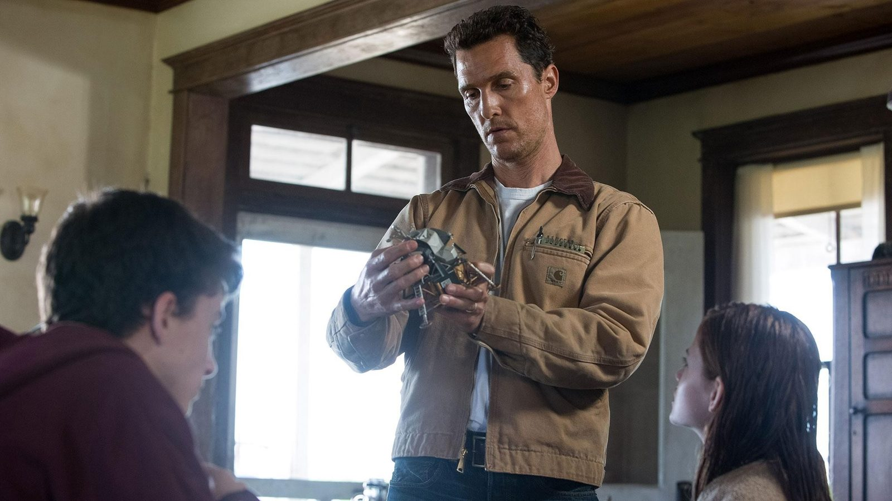
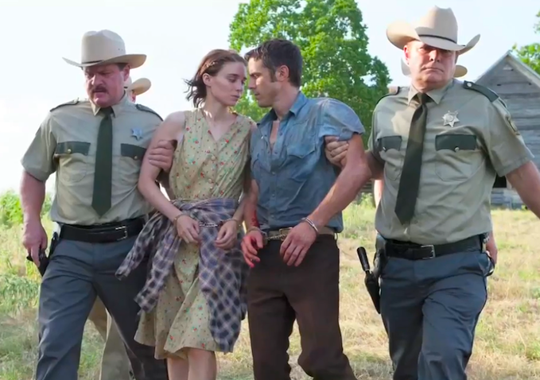
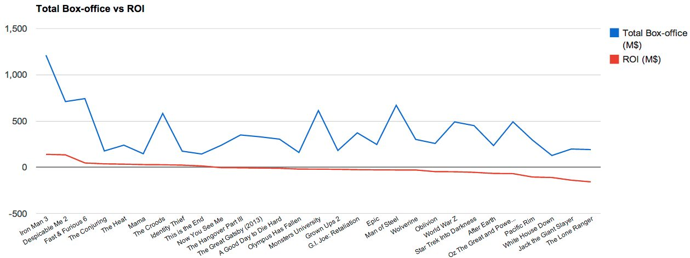
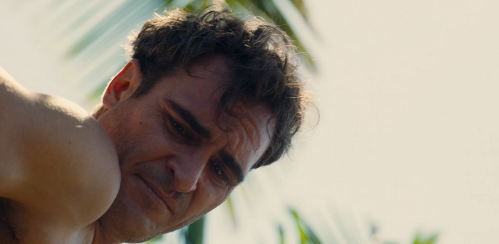
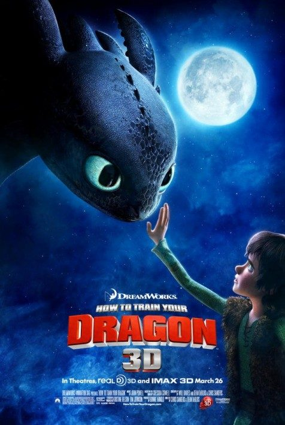

2023

2020

2019

Le top des films 2019 (ou presque)
Les goûts et les couleurs ... voici les miens pour 2019. Pour rappel: Top 2018, Top 2017, Top 2016, Top 2015, Top 2014, Top 2013, Top 2012, Top 2011, Top 2010, Top 2009, Top en 200…
Lire l'article
Le top des films 2018
Et voilà un petit top pour 2018. Pour rappel: Top 2017, Top 2016, Top 2015, Top 2014, Top 2013, Top 2012, Top 2011, Top 2010, Top 2009, Top en 2008, Top en 2007 , Top en 2004-2005-…
Lire l'article2018
Le top des films 2018 (à fin août)
Les "pas encore vus" The Florida project, La douleur, Revenge, Hostiles , Phantom Thread, Lady bird, Isle of dogs, The death of Stalin, En Guerre, Sicario: Day of the Soldado, Au p…
Lire l'articleLe top des films 2018 (à fin mars)
Les "pas encore vus" The Florida project, La douleur, Sparring, Burn out, Eva, Revenge, Hostiles, , Phantom Thread, Ladybird, Game Night, Ghostland, Le top 2018 (à fin février) I, …
Lire l'article2017

Le top des films 2017
Petite année cinéma 2017 malheureusement, mais quelques pépites néanmoins. Je n'ai cependant pas encore vu 3 films dont j'ai entendu le plus grand bien: Au revoir là-haut de Dupont…
Lire l'articleLe top des films 2017 (à fin juillet)
Les "pas encore vus" Moonlight, 20th Century Women, The edge of seventeen, Aurore, Les fantômes d'Ismaël, Their finest, Marie-Francine, The Wall, L'amant double, The Autopsy of Jan…
Lire l'article
Le top des films 2016
Une année cinéma en demi-teinte. Pas de chef d'oeuvre, en tout cas de mon point de vue. Quelques très bons films et surtout de nombreux films plus mineurs mais originaux et fort re…
Lire l'article2016

2015
Le top des films 2015 !
Voilà c’est la fin de l’année, c’est l’heure du top 2015. Une belle année cinéma. Pas d'Interstellar cette fois-ci, mais quelques gros chocs, dont le Mad Max forcément. Et puis ce …
Lire l'articleTop films 2015 à fin août
Les "pas encore vus" Shaun the sheep, Tous les chats sont gris, La loi du marché, Danny Collins, Minions, Mr Holmes, The man from U.N.C.L.E., Dheepan, Le nouveau testament, Knock K…
Lire l'articleLe top des films 2015 à fin mai
Les "pas encore vus" Relatos Salvajes, l'enquête, Shaun the sheep, Avengers: Age of Ultron, Tous les chats sont gris, La loi du marché. Le top 2015 (à fin mai) 1/ A Most violent ye…
Lire l'articleLe top des films 2015 à fin janvier
Premier top de 2015, ... il est court, certes, mais déjà fort intéressant. Pas encore vus: La famille bélier, Relatos Salvajes, the-theory-of-everything-image-eddie-redmayne 1/ The…
Lire l'article2014

Les films attendus en 2015
Un peu brut de décoffrage, les films les plus attendus (par moi en tout cas) en 2015. Une belle année en perspective .... Janvier The Theory of Everything, bande-annonce, score 8/1…
Lire l'article
Le top des films 2014 !
Voilà c'est la fin de l'année, c'est l'heure du top 2014. Une superbe année cinéma, avec un très grand film, quelques très bons films, et un ribambelle de chouettes films. Pour rap…
Lire l'articleLe top des films 2014 à fin novembre ...
C'est presque la fin de l'année, et on peut déjà dire que 2014 est une belle année de cinéma, avec un grand grand classique ! Les pas encore vus Suzanne,Nebraska, Upstream color, L…
Lire l'article
Le top des films 2014 à fin octobre ...
Avec une bonne quarantaine de films conseillés, cette année 2014 est étrange. Elle est riche, mais manque encore de son chef d'oeuvre. Novembre? Décembre? Ou une séance de rattrapa…
Lire l'articleLe top des films 2014 à fin juillet ...
Et le top des films à ce jour en 2014 1/The wolf of wall-street, bande-annonce, score 8/10, "Ca parle pendant 3h, c'est fun et déjanté, comme d'habitude Scorsese nous sort quelques…
Lire l'article
Demandez le programme cinéma de février 2014 …
Février 2014 Jack et la mécanique du coeur, bande-annonce, "Production EuropaCorp (Besson), Stéphane Berla et Mathias Malzieu co-réalise ce film d'animation musical, adapté du roma…
Lire l'article2013
Demandez le programme cinéma de janvier 2014 …
Janvier 2014 The wolf of wall-street, bande-annonce, score 7,5/10, "Ca parle pendant 3h, c'est fun et déjanté, comme d'habitude Scorsese nous sort quelques plans qui seront copiés …
Lire l'article
Le top des films de 2013
Une chouette année cinéma Voilà une chouette année cinéma qui se termine, avec un top qui mélange les films attendus et des surprises. C'est certainement la meilleure année cinéma …
Lire l'articleEt donc ce Gravity?
24 mois. Cela fait 24 mois que j'ai noté pour la première fois "Gravity" dans la liste des films attendus. A l'époque c'était d'ailleurs la liste de 2012. Le film est passé à la Mo…
Lire l'article
Demandez le programme cinéma de novembre 2013 …
Novembre 2013 Plus petit mois de novembre, mais quand même, quelques belles sorties en perspective, des potentiels bons "petits" films. Ain't Them Bodies Saints, bande-annonce, "A …
Lire l'article
Prisoners: bien, très bien ou carrément super bien?
Un petit mot sur Prisoners, car c'est un peu juste de résumer ma pensée sur Twitter en 140 caractères. Est-ce un bon film? Oh oui Est-ce un très bon film? Oh oui Est-ce carrément s…
Lire l'articleDemandez le programme cinéma d'octobre 2013 …
Octobre 2013 Prisoners, bande-annonce, "Villeneuve -Incendies- est de retour avec un gros casting et un film dont le buzz est très positif. On parle d'un policier très très solide,…
Lire l'article
Demandez le programme cinéma de septembre 2013 …
Septembre 2013 C'est la rentrée scolaire et donc au cinéma, plus de dessins-animés pour enfants, ils sont tous sortis cet été. Et plus de blockbusters à part le Michaël Bay, retard…
Lire l'article
Summer 2013 US Box-Office ... une analyse rapide
Cela fait quelques semaines qu'on peut lire des articles sur le gros plantage de certains gros blockbusters américains On n'a pas toujours les chiffres dans les articles, ni la vue…
Lire l'article
Demandez le programme cinéma d'août 2013 …
Août 2013 Ce sera un petit, petit mois d'août ... Par contre, séances de rattrapage, le classement des films 2013 a évolué. Et sur les derniers mois, il y a de jolie choses à voir,…
Lire l'article
Demandez le programme cinéma de Juillet 2013 …
Juillet 2013 Snabba Cash 2, bande-annonce, "La suite du très bon Snabba Cash, aucune idée si c'est un pétard mouillé, mais les critiques semblent être loin du niveau du premier" Wo…
Lire l'article
Demandez le programme cinéma de Juin 2013 …
Juin 2013 The iceman, bande-annonce, "Michael Shannon au cinéma, c'est souvent un grand moment. Une petite série B sympa? " Demi-soeur, bande-annonce, "C'est catastrophique quand o…
Lire l'articleDemandez le programme cinéma de Mai 2013 ...
Mai 2013 The company you keep, bande-annonce, score 6 à 6,5/10, "Solide casting pour le dernier opus de Robert Redford, mais cela ne suffit pas. Comme on pouvait lire dans une crit…
Lire l'article
Demandez le programme cinéma d'Avril 2013 ...
Et que nous réserve avril au cinéma? Avril 2013 G.I. Joe 2: Retaliation, bande-annonce, "Bon, le premier était ridicule, le second sera aussi probablement ridicule. Pour info, c'es…
Lire l'article
Demandez le programme cinéma de Mars 2013 ...
Un plus gros mois de mars pour suivre le très petit mois de février. Miam, miam. Mars 2013 The Master, bande-annonce, Score: 7,5/10, "P.T. Anderson, Joaquin Phoenix , Philip Seymou…
Lire l'articleDemandez le programme cinéma de Février 2013 ...
Un petit mois de février pour suivre le gros mois de janvier. Hitchcock, bande-annonce, Score 5 à 6/10, "on pensait en appendre plus sur le personnage d'Hitchcock ou sur le tournag…
Lire l'article2012

Demandez le programme cinéma de Janvier 2013 ...
Janvier 2013 at the Movies Un gros mois cinéma pour démarrer l'année, avec quelques avis déjà disponibles. Screenshot 22:12:12 10:59 The Perks of Being a Wallflower, bande-annonce,…
Lire l'articleTop des films 2012
Le top des films en 2012 Les films que je n'ai pas (encore) vus Moonrise Kingdom, Holy Motors, Ernest et Célestine. Le top 10 the-girl-with-the-dragon-tattoo-11 1. The girls with t…
Lire l'article
Les films en 2013, Tadaaaaam
L'année 2013 va démarrer en feu d'artifices avec les sorties européennes des oscarisables 2012 US. Après, on attend encore de grands films et de potentielles belles surprises. Voil…
Lire l'article
Je mise sur un grand cru cinéma 2012. Les tops et flops à venir? (update 03/11/2012)
Après une année cinéma 2011 décevante, je parie sur un grand cru 2012. Pourquoi? Parce que 2012, il y aura du solide, du très solide. Et il en manque encore ... donc pour bien fair…
Lire l'article
Cloclo, bigger than life
Cloclo de Florent Emilio Siri Verdict: 7 à 8/10. Je me suis quand même surpris cette semaine à être tellement motivé pour aller voir Cloclo. Je suis né trois ans avant sa mort, je …
Lire l'articleLes tops et flops à venir au mois de février 2012
Alors, février 2012, je prends des paris sur The Descendants d'Alexander Payne, Sortie: Fev12 Bande-annonce Pourquoi: parce qu'Alexandre Payne est un auteur, un vrai, scénariste et…
Lire l'article2011
Top 10 des films en 2011
C'est l'heure des classements sur tous les sites, dans toutes les revues, alors c'est parti pour mon top des films en 2011. Un petit mot d'introduction ... 2011 n'est pour moi pas …
Lire l'articleHeureusement qu'ils sont "intouchables"
Hier soir, j'ai été voir Intouchables. Comme toute la francophonie donc. J'ai voulu réserver en ligne dans un multiplexe, c'était plein. Je suis alors allé dans un petit cinéma de …
Lire l'articleFair Game - top !
Voilà un très bon film que j'avais raté en 2010. Malheureusement pour lui, il porte le même titre qu'un navet avec William Baldwin et Cindy Crawford, c'est son seul défaut :-) Je n…
Lire l'articlePirating the 2011 Oscars
Interesting post on waxy.org on "How Oscars nominated movies are leaked online".
Lire l'articleTop des films en 2011 (à fin janvier)
Début d'année 2011, un mois de passé, et c'est la fête au cinéma! Le joyeux luron ci-dessus, c'est James Franco, alias Aran Ralston dans 127 hours, la petite perle de Danny Boyle. …
Lire l'article2010
Top 10 des films en 2010, en bande-annonce
Pour compléter mon top des 10 films à voir en 2010, voici les bandes-annonces ... c'est souvent plus parlant. 1/ Inception youtube=http://www.youtube.com/watch?v=66TuSJo4dZM] 2/ Ho…
Lire l'article
Top 10 des films en 2010
C'est l'heure des classements sur tous les sites, dans toutes les revues. Comme vous le savez, le cinéma est une de mes passions, alors c'est parti pour mon top des films en 2010 E…
Lire l'articlePresque du cinéma, les séries TV en 2010
Après le top 10 des films en 2010, un petit mot sur les séries TV. Cette année, The Pillars of the earth Le chef d'oeuvre de Ken Follett adapté en une belle série TV, produite par …
Lire l'articleHow to train your dragon: Fantastique
Ah, voilà une merveilleuse surprise! Le dernier dessin-animé de Dreamworks "How to train your Dragon" est un condensé de fun. Les réalisateurs du très sympathique Lilo & Stitch, De…
Lire l'articleLe top des films 2010 (Février 2010)
Début d'année 2010, un mois de passé, pas encore de chef d'oeuvre en vue. Deux films qui sortent vraiment du lot: Le Bad Lieutenant d'Herzog avec la sur-performance de Nicolas Cage…
Lire l'articleAvatar encore plus haut
Maintenant qu'Avatar a détrôné Titanic, on n'en parle moins et pourtant le film de James Cameron continue a explosé les records. Sur le sol américain, Avatar continue a engrangé 16…
Lire l'articleLe top des films 2010 (Janvier 2010)
Début d'année 2010, un mois de passé, pas encore de chef d'oeuvre en vue. Un seul film qui sort vraiment du lot: Le Bad Lieutenant d'Herzog avec la sur-performance de Nicolas Cage.…
Lire l'articleTitanic submergé par Avatar, d'ici quelques jours
Voilà, il n'y a plus de doutes, d'ici quelques jours, James Cameron aura fait du film le plus cher de l'histoire, également le premier film au box-office. Comme le film est encore …
Lire l'articleAvatar va avaler Titanic ...
On peut encore se demander si Avatar va dépasser le record, jusqu'alors considéré comme imbattable de Titanic. Aujourd'hui il est a moins de 240M$ worldwide, Avatar devrait donc pa…
Lire l'articleQuote of the day #57
"Shoot him again, his soul is still dancing". Nicolas Cage, Bad Lieutenant: Port of Call - New Orleans And I must say, Nicolas Cage deserves Oscar Nomination for this movie!
Lire l'articleQuote of the day #56
"That's the beauty of argument, if you argue correctly, you're never wrong." Aaron Eckhart (in Thank You For Smoking)
Lire l'articleCa monte encore plus pour Avatar
Un week-end plus tard, Avatar gagne 26 places au Box-Office International et 25 places au Box-office US. Ce qui est déjà certain, c'est que d'ici quelques jours, Avatar dépassera P…
Lire l'article(sans titre)
Matthew Shapiro’s 2009 films video montage: The Cinescape (through Slashfilm) youtube=http://www.youtube.com/watch?v=bq1SNnDrmhA&hl=fr\FR&fs=1&] LIST OF MOVIES, IN ORDER OF APPEARA…
Lire l'articleCa monte pour Avatar
Ca monte pour Avatar, même si on est encore loin de Titanic ... Actual Worldwide box-office Actual US Box-Office
Lire l'article2009
Le top des films en 2009 (octobre 2009)
Voilà mon top des films en 2009 (à fin octobre 2009). Le top des films en 2009 (à octobre 2009) 1. Un prophète 2. Rachel Getting Married 3. The Curious Case of Benjamin Button 4. S…
Lire l'articleLe top des films en 2009 (mai 2009)
Cela fait déjà quelques mois que je n'ai plus blogué sur les films en 2009. Voilà donc mon top des films en 2009 (septembre 2009). Le top des films en 2009 (à septembre 2009) 1. Un…
Lire l'article(sans titre)
Woaw, great posters set for the new Spike Jonze's movie "Where the wild things are", as see on slashfilm.com. The fourth one is just ... perfect.
Lire l'articleQuote of the day #51
" You are too concerned with what was and what will be. Yesterday is history, tomorrow is mystery, today is a gift, that's why it's called the present." Master Ogway Oui j'ai vu Ku…
Lire l'articleLe top des films en 2009 (février 2009)
L'année 2009 cinéma avait bien commencée, et continue plutôt pas mal. Après Button et Slumdog, voici le petit bijou qui pour ma part prend la tête du classement: Rachel Getting Mar…
Lire l'articleUn film qui vous touche … c’est rare #2
Et voilà, pris au piège une deuxième fois cette année. J'ai été complètement happé par Rachel Getting Married, le nouveau film de Jonathan Demme. L'histoire est simple comme bonjou…
Lire l'articleLe top des films en 2009 (janvier 2009)
L'année 2009 cinéma commence bien, avec un grand film, quelques très bons films, et une bonne surprise. Le grand film, c'est le David Ficher, The Curious Case of Benjamin Button, q…
Lire l'articleSony Pictures is aware (too)
Après Adobe (see previous post), voilà un deuxième exemple de Twitter-Marketing. Hier a été diffusé (sur FX, je pense) le premier épisode de la seconde saisons de Damages. - 1ère é…
Lire l'articleUn film qui vous touche ... c'est rare
Hier soir, j'ai vu un superbe film, qui m'a touché, sincèrement touché. Pourtant, je ne suis pas le plus dupe, je regarde beaucoup de films, je connais les ficelles, comme on dit. …
Lire l'articleTop 10 des films 2008
Comme d'habitude, à la fin de l'année, c'est l'heure des bilans. Pour bien faire, j'aurais voulu parler de cinéma, de musique, de boulot, de famille. Alors, je commence par le ciné…
Lire l'article2008
Are you a film addict?
Film Addict takes the top 250 films on IMDB and quizzes you on how many you've seen. My score is 81,6%. I'm definitely an addict. Compare your score. (thx, jkottke)
Lire l'articleSlum and B-Boy
Avant un post sur l'année cinéma 2008 (si j'y arrive), deux bons à très bon films que j'ai eu l'occasion de voir récemment, et que je vous conseille ... Planet B-Boy Le premier fil…
Lire l'articleDid you know?
Did you know? I'm reading David A. Price's The Pixar Touch, and will be talking about it more, later. But here is already something I didn't know. Did you know that Steve Jobs was …
Lire l'articleDon't vote ... Vote!
Movie stars & Politics & Internet, I got to post this, it fills all my blog categories. youtube=http://www.youtube.com/watch?v=0vtHwWReGU0&hl=fr&fs=1] Jonah Hill is funny, rent Sup…
Lire l'articleQuote of the day #45
"May all of your up's and down's come only in your bedroom" In Rachel Getting Married trailer. Looks like a good movie and might be the breakthrough performance for Anne Hathaway. …
Lire l'articleJesus is Magic
Cette semaine j'ai regardé le stand-up de Sarah Silverman, Jesus is Magic. Et j'ai ri, beaucoup ri. Quel plaisir de voir bon stand-up américain. Ca me donne envie de revoir I'm tel…
Lire l'articleThe Dark Knight Mis-communication
Vous savez déjà tous que The Dark Knight est le film de l'été, et le meilleur film de super-héros. Vu le succès, cela génère des parodies intéressantes. Celle-ci est un peu longue,…
Lire l'articleLes films vus au mois de juillet 2008
Ah vive le mois de juillet. J'ai enfin pu rattraper une partie de mon retard sur les sorties cinéma. Moins de boulot? Non pas vraiment, mais c'est plutôt l'effet série TV je pense.…
Lire l'articleLes deux séries US attendues pour la rentrée 2008
Vous êtes fans de J.J. Abrams (Lost & co) ou de Joss Wehdon (Buffy & co), vous allez être servis par les nouvelles séries TV de la rentrée. Les bandes-annonces sont plutôt bien fou…
Lire l'articleLe top des films en 2008 (juillet 2008)
Depuis le début de l'année, et dans ce que j'ai vu, voilà mon Top des sorties cinéma 1. Into the wild 2. There will be blood 3. Juno 4. Funny Games U.S. 5. Dan in Real Life 6. Clov…
Lire l'articleMonsters Bill.
Monsters Inc. with Kill Bill soundtrack. Nice ! youtube=http://www.youtube.com/watch?v=lZalH9aJzu8&hl=en&fs=1]
Lire l'articleThe Dark Knight pourfend le Box-Office US (update 04/08/2008)
Je vous ai déjà parlé plusieurs fois du prochain Batman (The Dark Night), le film le plus attendu de 2008, par moi (surtout ;-)), par les fans, par la critique, et visiblement par …
Lire l'articleCrush Inc.
Heard about Crush Inc.? A design agency, making: clips, film titles, TV ads, etc. They've worked on REM latest music videos. You should have a look at their website. Click on "post…
Lire l'articleI'm a movie producer :-)
This morning, I became a movie Assistant Producer. The film is called FREE FOR ALL...BUT YOU! and will be direted by Casey Walker. the film is best known as the "My Million Dollar …
Lire l'articleLa bande-annonce du jour #22 (Quantum of Solace)
La série des James Bond semble continuer sur la bonne re-lancée entamée avec l'excellent Casino Royal. Je continue à bien aimer l'idée de ce Bond un peu incontrôlable. Et puis rega…
Lire l'articleWould this be the best movie of 2008?
Where the Hell is Matt? (2008) from Matthew Harding on Vimeo.
Lire l'articleStop-Loss, c'est quoi en plus d'être un bon film?
Stop-Loss de Kimberly Peirce avec Ryan Phillippe, Channing Tatum, Timothy Olyphant, Joseph Gordon-Levitt Liens: IMDB Pitch: Brandon King, un héros de la guerre en Irak, fête son re…
Lire l'articleThe Dark Night Early Reviews (not mine)
Following this morning post on the Dark Knight's Press Screening Secuiryt, I just wanted to post some early reviews on the movie. As you will see, The Dark Knight should really be …
Lire l'articleVision de presse & Sécurité
Voilà un petit extrait d'une invitation pour la projection de presse de The Dark Night, le nouveau Batman qui sort d'ici quelques semaines. La Warner, comme les autres studios, pro…
Lire l'articleThe Mist, Darabont réussit (encore) son adaptation de Stephen King
The Mist de Frank Darabont avec Thomas Jane, Andre Braugher, Laurie Holden Liens: IMDB Incroyable, il n'y aurait presque que FRank Darabont qui puisse réussir des adaptation de Ste…
Lire l'articleLe top des films en 2008 (juin 2008)
Depuis le début de l'année, et dans ce que j'ai vu, voilà mon Top des sorties 1. Into the wild 2. There will be blood 3. Juno 4. Dan in Real Life 7. Cloverfield 6. Indiana Jones an…
Lire l'articleThe Ruins
The Ruins de Carter Smith avec Jonathan Tucker, Jena Malone, Laura Ramsey Liens: IMDB La bonne petite surprise du mois de juin. Je l'avais mis dans la liste des films attendus de 2…
Lire l'articleLe nouveau Shyamalan, c'est pas mal du tout
The Happening de M. Night Shyamalan avec Mark Wahlberg, Zooey Deschanel, John Leguizamo Liens: IMDB Shyamalan a réalisé certains de mes films préférés: Unbreakable. Une formidable …
Lire l'articleFirst 7 minutes of Speed Racer ...
Until now, I was not convinced by the next Wachowski brothers flick: Speed Racer. After seeing the first 7 minutes, I'm still not convinced at all. As for the movies critics, only …
Lire l'articleRoulive's family at the Zoo
Ok, ok, this won't sound interesting for all my dear readers. But, anyway, you'll find hereunder a short edited movie about our day at the Toulouse Zoo (Plaisance de Touch to be mo…
Lire l'article2 photos et j'ai déjà envie de voir le film
Burn After Reading de: Joel Coen, Ethan Coen avec: Bradd Pitt, George Clooney, Tilda Swinton, John Malkovich, Frances McDormand liens: IMDB sorties: Décembre 2008 Deux premières ph…
Lire l'articleStreet Kings, un film qu'il est pas mal du tout
Street Kings de David Ayer avec Keanu Reeves, Forest Whitaker, Hugh Laurie, Chris Evans, Naomie Harris Liens: IMDB La critique américaine n'était pas magnifique, alors j'ai hésité …
Lire l'articleLa bande-annonce de jour # (The Dark Knight)
Et voilà, la version officielle de la bande-annonce la plus regardée de manière pirate cette semaine. Je vous l'avais dit ici, et là, The Dark Knight est un des films les plus atte…
Lire l'articleBabylon A.D., teaser en ligne
Babylon A.D. de Mathieu Kassovitz avec Vin Diesel, Gérard Depardieu, Michelle Yeoh. Pitch: Dans un futur proche, dans un monde ravagé par la guerre, en proie à l’anarchie et aux in…
Lire l'articleSi c'est pas triste ...
Visiblement le tournage du prochain James Bond ne se pas sans petit lifting d'Aston Martin. Si c'est pas triste quand même ....
Lire l'articleLa bande-annonce du jour #20 (Hellboy 2à
Seconde bande-annonce d'Hellboy II, The Golden Army. Je suis un grand fan de Guillermo Del Toro depuis que j'ai découvert Cronos à 18 ans (quel bail). Depuis il a pu développer un …
Lire l'articleL'invité: Un film plus sympa que ce qu'en dit la critique
J'ai vu hier soir L'invité de Laurent Bouhnik, avec Auteuil, Lemercier et Lhermitte. J'avais un peu peur après avoir lu les critiques pas très positives à la sortie. Et au final, c…
Lire l'articleLa bande-annonce du jour #19 (Blindness)
Première bande-annonce d'un autre des films que j'attendais cette année. Excellent casting, sujet étrange et réalisateur avec une vision qui fait un sans faute pour le moment: Cida…
Lire l'article
(sans titre)
J'aime bien les infographie du Figaro. Aujourd'hui, celle des plus grands succès du cinéma français. Les ch'tis vont dépasser la Grande Vadrouille ce week-end. Quand on regarde le …
Lire l'articleLa bande-annonce du jour #18
Jud dApatow, Seth Rogen, ca vous dit quelque chose? The 40 year old virgin, Knocked Up, Superbad, ca vous dit quelque chose? Ils sont de retour à la plume, avec Seth Rogen devant l…
Lire l'articleLe top des films en 2008 (mars 2008)
Depuis le début de l'année, et dans ce que j'ai vu, voilà mon Top des sorties 1. Into the wild 2. There will be blood 3. Juno 4. Lars and the real girl 5. Cloverfield 6. Sweeney To…
Lire l'articleLes films vus au mois de mars 2008
Un petit (long) point sur les films vu ce mois-ci. 10 films, dont un quais chef d'oeuvre et 3 films sympas. Aussi une série pas mal du tout. En début de mois, il y avait le très ma…
Lire l'articleQuote of the day #37
"T'as pas besoin d'un flash quand tu photographies un lapin qui A déjà les yeux rouges."C'est probablement la meilleure ... on ne fera jamais mieux. "Si tu téléphones à une voyante…
Lire l'articleLa bande-annonce du jour #16 (Tropic Thunder)
Septs ans après le cultissime Zoolander, yahoooo, Ben Stiller revient devant et derrière la caméra avec un scénario bête et sympa, un casting de choc (Stiller, Robert Downey Jr en …
Lire l'articleLa bande-annonce du jour #15 (The Love guru)
Mike Myers est de retour avec The Love Guru. La bande-annonce laisse entrevoir un humour équivalent (un peu trop peut-être pour les tics et autres) à ses Austin Powers ... mais que…
Lire l'articleWALL-E Poster, qu'il est beau
Ca résumé tout le génie de Pixar. C'est original, terriblement beau et plein de sensibilité dans le personnage., tout dans une affiche de cinéma.
Lire l'articleTop des films en 2008 (Février 2008)
Depuis le début de l'année, et dans ce que j'ai vu, voilà mon Top des sorties 1. Into the wild 2. There will be blood 3. Juno 4. Lars and the real girl 5. Cloverfield 6. Sweeney To…
Lire l'articleMacHeads, the movie ...
For my MacHeads friends ... Macheads - the movie (trailer)
Lire l'articleLes films vus au mois de Février 2008
Un petit point sur les films vu ce mois-ci. 9 films, allez, c'est pas mal. Mais bon, j'ai redémarré Lost et House MD aussi, alors ca occupe quand même. Je me suis rattrapé avec Mic…
Lire l'articleLe film qu'il est très bien à voir: "There will be blood"
There will be blood de Paul Thomas Anderson avec Daniel Day-Lewis, Paul Dano, Dillon Freasier Liens: IMDB, Rotten-Tomatoes Pitch: Lorsque Daniel Plainview entend parler d'une petit…
Lire l'articleCloverfield, La guerre des mondes version vidéo-amateur?
Cloverfield sur IMDB, et Rotten-Tomatoes. Si vous comprenez le titre négativement, c'est que j'ai mal choisi ma tournure de phrase. Pour résumer ma pensée, Cloverfield est certaine…
Lire l'articleLa bande-annonce du jour # (MR-73)
Bon, c'est totalement orienté comme choix ce matin. Je vous parlais de MR-73 comme d'un des films que j'attendais le plus pour 2008. Ca reste le cas, malgré la très mauvaise (dans …
Lire l'articleLes films vu au mois de Janvier 2008
J'avais dit au mois de juillet l'année dernière que je testais le plug-in le WP Movie Ratings pour Wordpress, et que j'en profiterais pour vous poster un résumé des films que je vo…
Lire l'articleLa bande-annonce d'Indiana Jones 4, c'est dans 5 jours
Juste un petit rappel, la bande-annonce de Indiana Jones and the Kingdom of the Crystal Skull sera disponible à partir du 14 février prochain. Le film es toujours prévu pour une so…
Lire l'articlePremières images du 22ème Bond "Quantum of Solace"
Lire l'articleQuote of the day #33
Un type qui a une fille devant lui qui se fout a poil et qui "euuh non je ne pense pas que c'est une bonne idée" .. soit c'est un pédé , soit c'est un idiot .. P-A Losson, quand on…
Lire l'articleTop 10 des films en 2007
Comme d'habitude, à la fin de l'année, c'est l'heure des bilans. Là je suis un peu à la bourre, on est déjà en février, mais soit. Voici mon top des fillms de l'année 2007. Ceux qu…
Lire l'articleLa bande-annonce du jour #13 (The Happening)
Premier teaser du prochain film de M. Night Shyamalan. The Happening de M. Night Shyamalan avec Mark Wahlberg, Zooey Deschanel, John Leguizamo, Spencer Breslin Pitch: Une famille e…
Lire l'articleLe navet de la semaine: AVPR
J'ai eu la malchance de voir AVPR: Aliens vs Predator - Requiem. En même temps, je ne suis pas surpris du résultat, c'est plutôt mauvais à très mauvais. Après un premier épisode ra…
Lire l'articleLa bande-annonce du jour #12
Ed Zwick a gagné mon respect en réalisant Glory en 1989. Depuis, c'était moins bon, jusqu'au très réussi et surprenant Blood Diamond l'année dernière. Aussi, à l'arrivée de la band…
Lire l'articleInto the Wild, enfin vu
J'ai, enfin, eu l'occasion d'aller voir le film de Sean Penn. Into the Wild de Sean Penn, avec Emile Hirsch, Marcia Gay Harden, William Hurt, Catherine Keener, Jena Malone, Vince V…
Lire l'articleQuote of the day #30
Larry Liddle: It seems to me lookin' around, that it's almost all women workin' here; and that they're all very pretty. Is that common? Charlie's Angel 1: Well... Congressman Wilso…
Lire l'articleSteadicam: un peu d'histoire
En me balladant sur le site de Johnny Chung Lee, qui développe ses trucs de fous pour la WII, j'ai vu qu'il expliquait également comment construire une . Si vous êtes fainéant,…
Lire l'articleRIP - Heath Ledger
Ca c'est pas cool. L'acteur Heath Ledger a été retrouvé mort, hier 22 janvier, dans son appartement de New-York. Après avoir été nominé pour Brokeback Moutain, interprété une des f…
Lire l'articleJuno, un feel-good movie qu'il est bien à regarder
Voilà mon premier coup de coeur de 2008: Juno de Jason Reitman Sortie en France et Belgique le 6 février 2008 Ce n'est pas une surprise, tellement la sortie US avait été accompagné…
Lire l'articleLes films qu'ils sont attendus en 2008 (par moi)
Après une année 2007 en demi-teinte, voilà une année 2008 avec plein de sorties. Je ne vais pas tout vous détailler tellement la liste est longue, vous trouverez plein de sites pou…
Lire l'articleCalifornication, une série qu'elle est bien pour la regarder
J'avais eu des échos très positifs, j'en ai eu la confirmation, Californication semble bien être une série géniale. J'ai vu les deux premiers épisodes ce soir, un régal. M6 aurait …
Lire l'articleDo you really need 2000 actors to shoot an Omaha Beach sequence?
Via Laurent ... 4 jours de tournage et beaucoup de post-prod et voilà le débarquement de Omaha Beach réalisé par 3 personnes. youtube=http://www.youtube.com/watch?v=WRS9cpOMYv0&rel…
Lire l'articleSubjugué par des champs de fraises et Bono en morse
Bonne surprise, j'ai vu Accross the Universe de Julie Taymor hier. La réalisatrice acclamée de Titus et Frida. Julie Taymor est une véritable artiste visuelle. Acclamée pour son ad…
Lire l'articleAre Blue-Ray or HD-DVD worth the difference with classic DVD?
Are Blue-Ray or HD-DVD worth the difference with classic DVD? See for yourself right here.
Lire l'articleVideoTrace: interactive 3D models generation
VideoTrace is a system for interactively generating realistic 3D models of objects from video—models that might be inserted into a video game, a simulation environment, or another …
Lire l'articleWarner abandonne le HD-DVD? Victoire définitive pour le Blu-Ray?
La Warner qui faisait l'équilibre entre le Blu-Ray et le HD-DVD se rangera définitivement du côté du Blu-Ray d'ici juin 2008. Voilà qui sent bon pour Sony. Actuellement on en est d…
Lire l'article2007
6 minutes du prochain Batman en ligne
Je n'arrête pas de vous parler du prochain Batman (The Dark Knight, de Christopher Nolan). Un vrai gamin, je sais, j'assume. voir les autres posts] Aujourd'hui je vais faire un pos…
Lire l'articleLa bande-annonce du jour #11
Plein de posts cinéma en suivant, je sais. Mais je ferais un effort ce week-end pour parler de récentes lectures. La bande-annonce du jour sera double aujourd'hui. D'abord le secon…
Lire l'articleRidley Scott et David Cronenberg
Quand vous trouvez que l'année cinéma n'est pas géniale vous pouvez généralement suivre la règle des "grands" réalisateurs. Il y a en a quelque uns sur qui on peut quasiment systém…
Lire l'articleI Am Legend
I am Legend de Francis Lawrence avec Will Smith IMDB, Rotten-Tomatoes Il y aurait beaucoup de choses à écrire sur I Am Legend, le film tout juste à l'affiche de Francis Lawrence. C…
Lire l'articleLa bande-annonce du jour #10
L'événement de la semaine, la nouvelle bande-annonce de The Dark Knight, la suite de Batman Begins. Je ne dis rien de plus, c'est juste pas forcément la meilleure bande-annonce du …
Lire l'articleJVCD WOW
Après William Shatner et Mister T, c'est Jean-Claude qui s'y colle, et avec beaucoup de talent je dois dire. On attend Verne Troyer (Mini-Me d'Austin Power) prochainement. youtube=…
Lire l'article
Bilan 2007 de la HD
Un article intéressant sur Ecran Large qui propose un bilan de la HD pour 2007, sur base d'une étude de GK. Le graph suivant est le plus intéressant. Il montre qu'au taux de croiss…
Lire l'articleThere will be ... a masterpiece
Je vous parlais de la bande-annonce de There will be blood, le nouveau P.T. Anderson, il y a quelques temps. Le film est aujourd'hui nominé au Golden Globes: - Best Motion Picture …
Lire l'articleCinephile vs Cinephage?
On peut généralement lire que le cinéphile choisit les films qu'il veut voir, films rares qu'il traque, qu'il recherche alors que le cinéphage est celui qui voit n'importe quoi. Je…
Lire l'articleNational Board of Review 2007 Awards
La saison des récompenses est lancée par le National Board of Review. Je ne reprends pas tous les gagnants ici mais uniquement deux catégories. D'abord, place aux jeunes, si vous n…
Lire l'articleQuote of the day #21
Thomas: I'm proud of you. Edward Cole: Nobody cares what you think. Sean Hayes & Jack Nicholson in The Bucket List
Lire l'articleLucky you, un film qu'il est pas bien pour le louer en DVD
Lucky You Réalisateur: Curtis Hanson Avec: Eric Bana, Robert Duvall, Drew Barrymore. Sortie Ciné: Mai 2007 Sortie DVD: Novembre 2007 Voilà un film dont j'attendais plus. Encore une…
Lire l'articleLe nouveau Burton / Depp, une bombe?
Premier avis d'Emanuel Levy "Dark, haunting, and visionary, Sweeney Todd reps Tim Burton's best film since Ed Wood and his sixth and most challenging teaming with Johnny Depp, resu…
Lire l'articleUne petite pépite "Dan in Real Life"
Chaque année, il y a des petites pépites qui sortent au cinéma. Des petits films qui n’ont l’air de rien, mais qui vous font passer un moment particulièrement agréable, un vrai mom…
Lire l'articleQuote of the day #20
"Who is that sad little girl?" Le fantastique Stanley Tucci dans le rôle de Nigel, "The Devil Wears Prada". Un film sympa sans plus, mais avec un grand Tucci.
Lire l'articleLa bande-annonce de la semaine #9
Je voulais parler prochainement du petit bijou de film 'Dan in Real Life" que j'ai eu l'occasion de voir à Chicago, mais d'abord, la bande-annonce de la semaine. Le remake de Funny…
Lire l'articleSpiderwick Amazing Poster
Two sides of the same poster
Lire l'articleJe ressemble à Matthew Fox ... I'm lost
Mais aussi un peu à Forest Withaker... c'est déjà plus drôle ;-) | | | --- | | | | http://www.myheritage.com/collage | | | | --- | | |
Lire l'articleUn film qu'il est bien et d'autres bof
Le manque de temps fait que j'ai pas pu voir American Gangsters (Ridley Scott), Eastern Promises (David Cronenberg), In the vally of Elah (Paul Haggis), We own the night (James Gra…
Lire l'articleEnsemble, c'est tout
La bonne location du jour, pour les amateurs de film mignon, c'est l'adaptation du roman Anna Gavalda, Ensemble c'est tout. Comme le disait lors de la sortie Le Parisien "De temps …
Lire l'article12 ans déjà ... la claque
Magistral ... youtube=http://www.youtube.com/watch?v=ZJ9x2i2imk8&rel=1]
Lire l'articleFucking Short versions
Et que des grands films en plus ... Casino youtube=http://www.youtube.com/watch?v=3j\B-GhvPgU&rel=1] The big Lebowski youtube=http://www.youtube.com/watch?v=gU2ZgaQ\H-Y&rel=1] Pulp…
Lire l'articleXPO Reel
Le portofolie de XPO (Marc Fouchard), si vous êtes créatif, jetez un oeil là-dessus et vous vous direz ... "oh ouaw"!
Lire l'articleClassements Wikio ... aille, ca fait mal
Argh, je tombe sur les classements Wikio par hasard (;-)) ce matin, et voilà la position du R Blog: 14323, en baisse de 273 places. Soyons positifs, la baisse est faible, 2% ;-) Ma…
Lire l'articleLa bande-annonce de la semaine #8
Quand Paul Thomas Anderson sort un nouveau film, il y a de quoi être heureux. Quand Daniel Day-Lewis joue dans un film, il y a de quoi être heureux. Quand ils s'y mettent à deux, i…
Lire l'articleNespresso #2
Comme vous allez la voir 10.000 fois dans les mois qui viennent ... Quel charme ce George, incroyable.
Lire l'articleLa bande-annonce de la semaine #7
Cette semaine, c'est The Golden Compass, le premier volet de l'adaptation de la trilogie d'heroïc fantasy signée Philip Pullman. La bande-annonce est en haute-def, sur Apple, of co…
Lire l'articlePremiere Power List 2007
Premiere US a sorti sa Power List de 2007. Les premiers nous sont totalement inconnus ou presque. Il s'agit de JIM GIANOPULOS et TOM ROTHMAN. Les patrons de la FOX. Le FOX qui accu…
Lire l'articleThe Kingdom de Peter Berg
The Kingdom Réalisé par Peter Berg Avec Jamie Foxx, Jennifer Garner, Chris Cooper, Jason Bateman, Jeremy Piven Efficace à défaut d'être très subtil, The Kingdom sort dans quelques …
Lire l'articleLe plaisir du mois: 99 francs
C'est délirant, frénétique, ultra-visuel, punk, fun, trash. La mise en scène est virevoltante. Dujardin est terrible. Jocelyn Quivrin l'est encore plus. Et il y a quelques scènes é…
Lire l'article3:10 To Yuma
Réalisateur James Mangold Avec Russell Crowe, Christian Bale, Peter Fonda, Gretchen Mol, Ben Foster. Pas encore de date de sortie en France/Belgique, mais pour les amateurs de West…
Lire l'articleVan Damme en vrai ...
Van Damme joue Van Damme dans un film sur Van Damme. Le teaser du meilleur film de Van Damme est en ligne, JVCD sortira quelque part en 2008. Frédéric Bénudis signe le scénario. Le…
Lire l'articleQuote of the day #18
Un petit dialogue tiré d'un épisode de Desperate Housewive. Susan est enceinte, et se sert à manger. C'est délicieusement placé ;-) - Mike: "Do you really need to eat all of that?"…
Lire l'articleLa bande-annonce de la semaine #6
Deux bandes-annonces ce week-end. Je commence un peu biaisé, par une bande-annonce pas si géniale que cela, mais pour un film que j'attends toujours avec impatience. Southland Tale…
Lire l'articleLe site qu'il était bien pour le cinéma
Voilà ce qu'on peut lire sur Roulive.com, le site qu'il est bien pour le cinéma ce soir. Je vais donc avoir plus de temps pour le blog ! C’est un grand jour pour Roulive.com, le si…
Lire l'articleQuote of the day #17
Dans Two Days in Paris, Julie Delpy et son copain monte dans un taxi parisien. Le chauffeur de taxi baisse le son et juste après ... Le chauffeur de taxi "C'est une émission sur le…
Lire l'articleGorillaz live, près de chez vous?
Voilà un post que j'aurai dû faire il y a quelques temps déjà. Un sujet que j'apprécie, un mélande de musique, de vidéo, de techno et de buzz. Tout ce que j'aime. Vous connaissez l…
Lire l'articleQuote of the day #17 (Superbad)
"Breast Reduction Surgery? That's like slapping God across the face." Jonah "Seth" Hill in Superbad. La comédie de l'été aux US, produite par Judd Apatow je vous en reparle prochai…
Lire l'articleQuote of the day #15
"Hope for the best, plan for the worst" Ezra Kramer (Scott Glenn), The Bourne Ultimatum. Si ca vaut pour la NSA, ca doit valoir pour les business plan aussi, non?
Lire l'articleToys'R'Us Movie Campaign
Campagne de pub Toys'R'Us.
Lire l'articleLa bande-annonce de la semaine #5
Le nouveau film de Gondry n'a pas encore de date de sortie sur nos écrans, mais on a droit à la bande-annonce depuis hier sur le net. Idée géniale, duo d'acteurs insolites, une nou…
Lire l'articleLes films vus au mois de juillet 2007
Je teste un plugin wordpress qui s'appelle WP Movie Ratings pour le moment. Pas grandiose pour le moment, mais au moins vous pouvez voir facilement ce que j'ai pensé des films que …
Lire l'articleGuillermo in the Bourne Ultimatum
La vidéo tombe à pic, The Bourne Ultimatum vient d'exploser le box-office US avec le meilleur week-end du mois d'un mois d'août. Il serait temps qu'on voit ce genre de choses dans …
Lire l'articleRatatouille
Allez voir Ratatouille, c'est fantastique !
Lire l'articleWebapps VS. Desktop Apps, an example with JayCut
I've just tried out Jaycut beta, an online editing tool. By definition, Jaycut has a lot of nice features: 1. upload on the web, means some kind of backup for your local data 2. ea…
Lire l'articleSpiderPig
Je n'ai pas encore vu The simpsons au cinéma, mais le bruit court plus vite que le net que SpiderPig est déjà devenu culte. Suffit de regarder ci-dessous pour savoir pourquoi ... P…
Lire l'article
800 films en 5 ans
Vous connaissez Roulive.com, le site qu'il est bien pour le cinéma? Celui qui vous permet de voir les sorties cinéma, les bandes-annonces Celui qui vous permet de suivre les films …
Lire l'articleLa bande-annonce de la semaine #4
Voilà la bande-annonce de Charlie Bartlett. Le film sort cette semaine aux USA avec une critique positive, particulièrement à propos de la prestation du jeune Anton Yelchin qu'on a…
Lire l'articleLa phrase du jour #10
Llewelyn Moss: If I don't come back, tell mother I love her. Carla Jean Moss: Your mother's dead, Llewelyn. Llewelyn Moss: Well I'll tell her myself then. No country for old men, J…
Lire l'articleLa bande-annonce de la semaine #3
Le mystérieux J.J. Abrams continue à entretenir le mystère de Lost, et produit le film de Matt Reeves, scénariste et réalisateur de Felicity. Le scénario est écrit par Drew Goddard…
Lire l'articleLa phrase du jour #8
"Better than sex." Fred Topel de Can Magazine, dans sa critique de Transformers de Michael Bay.
Lire l'articleLa bande-annonce de la semaine #2
Comme je n'ai pas assez posté sur le cinéma ces derniers temps, il y aura deux bandes-annonces de la semaine ce week-end. Après celle réussie du Gone Baby Gone de Ben Affleck, une …
Lire l'articleLa bande-annonce de la semaine #1
Je me bats comme un âne avec ces plugins wordpress chaque fois que je dois mettre une vidéo sur le blog. Je ne sais pas ce que vous utilisez, mais en dehors des players qui propose…
Lire l'articleLa phrase du jour #5
"Les gens qui nous entouraient avaient un cerveau. Inconstestablement, cela aide" Marjane Satrapi & Vincent Paronnaud, réalisateurs de Persépolis. J'adore ...
Lire l'articleOcean's 40
Ocean's 40, via Loïc Le Meur, via Stage 6, via ....
Lire l'articleZodiac, le nouveau Fincher, un grand film
Ce matin, j'ai eu la chance (parce qu'avec deux enfants, il faut une épouse formidable ...) et l'honneur (parce que voir un grand film c'est toujours un honneur) d'aller au cinéma …
Lire l'articleLes 20 films à voir des trois dernières années (2004-2005-2006)
Je suis un cinéphile, un fou de cinéma, et depuis le début du blog, il n'y a qu'un post sur le sujet. Honte sur moi. Faisons donc honneur au 7ème art ce soir. Voici une liste, un t…
Lire l'articleLe nouveau film du réalisateur de The 40-year old virgin
Le nouveau film de Judd Apatow sera sur les écrans pour fin d'année 2007. Comme the 40-year old virgin est certainement une des meilleures comédies de ses dernières années, je n'hé…
Lire l'articleThe Good Shepherd, De Niro derrière la caméra
J'ai publié ce matin un avis sur The Good Sheperd sur le fantastique site de cinéma Roulive.Com. Un avis très positif, sur un film intelligent, et pas forcément très accessible. Da…
Lire l'articleCoup d'oeil sur les courts métrages d'animation nommés aux Oscars
Un petit coup d'oeil aux cours nommés aux Oscars. On dit les nominés sont nommés non ? Il y a des noms connus, qui sont déjà passés par les Oscars. Il y a aussi Pixar et la Fox qui…
Lire l'article